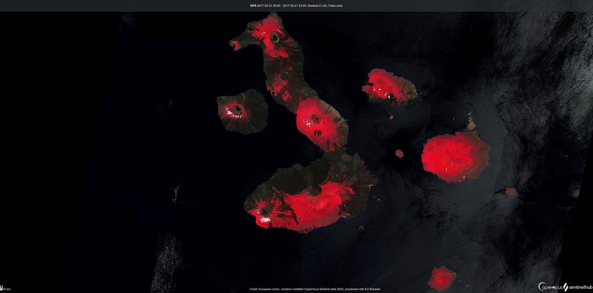

Compositions from Earth observation data.
Seeing beyond visible light
False-color composites assign infrared bands to visible colors. Healthy vegetation, bare lava, water and clouds reflect those bands differently, so the composite separates surfaces that look alike in a normal photograph.


Galápagos Islands
A false-color composite of the Galápagos archipelago. Vegetated highlands stand out against recent lava flows and the surrounding ocean.